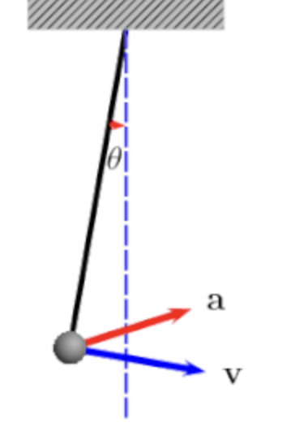

Here's a powerful tool to demonstrate why theoretical physics is an effective approach when modeling physical systems. I aim to showcase the advantages of working with dimensional units when performing quantitative analysis. Dimension refers to a quantity's unit of measurement (i.e. the quantity $2 meters$ has dimensions of: length $L^1$.
Starting with physics -- what real-world parameters determine the pendulum frequnecy $f$? Mathematically I am asking: what is $f$ actually a function of in our isolated system? Here are some realistic possibilities:

Conveniently, all quantities except for $ \theta$ are dimensional. Whatever form $f( \ell,g,m, \theta_i)$ takes on,
it must be dimensionally valid. Not all proposals for $f$ make sense, and so we can start to make some deductions.
For $\theta_i$, we will provide justification for considering its contribution as functional $\theta_i \rightarrow \Theta(\theta_i)$
Let me express this proposed relationship for $f$ as an algebraic function of those parameters:
$$ f\left( \ell,g,m \right)\ \text{~}\ \ell^{ \alpha} g^{ \beta} m^{ \gamma} \tag{Eq. 1}$$
Here, $\alpha, \beta,$ and $\gamma$ are entirely unknown -- they might even be zero. We require a system of equations
to make any determinations. There are three unknowns and three dimensions, so we may be in luck.
Since $f$ has units of frequency ($T^{-1}$), then
the quantity $\ell^{ \alpha} g^{ \beta} m^{ \gamma}$
must also have units of frequency. This allows us to transform our statement so that we equate the dimensionality
of our relationship, thus producing multiple equations for our multiple dimensions:
$$ \begin{cases} 1 \alpha + 1 \beta + 0 \gamma = 0 \\ 0 \alpha -2 \beta + 0 \gamma= -1 \\ 0 \alpha + 0 \beta + 1 \gamma = 0 \end{cases}$$
Joining both sides of (Eq. 3) to form a 3x4 matrix, we can row-reduce that object to obtain $\alpha, \beta, \gamma$:
$$ \begin{bmatrix} 1 & 1 & 0 & 0\\ 0 & -2 & 0 & -1\\ 0 & 0 & 1 & 0 \end{bmatrix} \stackrel{rr}{ \rightarrow} \begin{bmatrix} 1 & 0 & 0 & 1/2\\ 0 & 1 & 0 & -1/2\\ 0 & 0 & 1 & 0 \end{bmatrix} $$$$ \begin{cases} \alpha = \frac{1}{2}\\ \beta = - \frac{1}{2} \\ \gamma = 0 \end{cases}$$
These exponents produce the following frequency relationship for our pendulum:
$$f(g, \ell)\ \text{~}\ \sqrt{ \frac{g}{ \ell}} \tag{Eq. 4}$$This result states that the frequency of a pendulum scales with the square-root of gravitational acceleration, and with the inverse square-root of pendulum length. Mass did not factor into $f( \ell, g)$.
Writing this as an equality rather than a dependency relationship will require us to
address any dimensionless constants that would not have been encoded in the dimensionality of $f$.
Values like $\pi$ or $1/2$ may appear, and we know that some function of our initial angle $\theta_i$ probably
contributes to $f$ since $\theta_i = 0$ should give us $f = 0$, and $theta_i = 90^0$ probably gives us $f_max$
Therefore, we transform (Eq. 4) into an equality by including some unknown function ($\Theta$) of intial-angle:
We can plot and algebraically evaluate these relationships for $g$ and $l$ to convince ourselves that our expression makes sense.
Our limiting cases for system parameters also demonstrates that (Eq. 5) makes physical sense:
$$ \lim_{l \rightarrow \infty} f( \ell) = \Theta \ \lim_{l \rightarrow \infty} \sqrt{\frac{g}{l}} = 0 \tag{Lim. 1}$$Lim. 1 - If $a \gt \gt b$ in a number ($a/b$), then ($a/b) \rightarrow 0$.
$$ \lim_{g \rightarrow 0} f(g) = \Theta \ \lim_{g \rightarrow \infty} \sqrt{\frac{g}{l}} = 0 \tag{Lim. 2}$$Lim. 2 - Zero gravity gives us no pendulum motion, as expected.